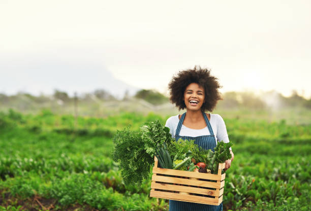
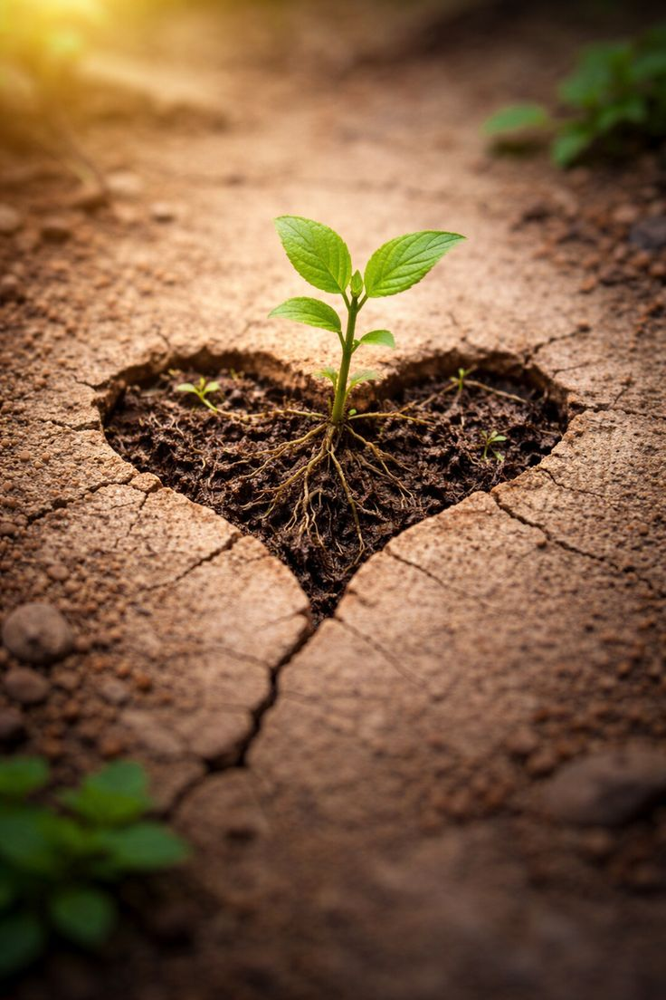
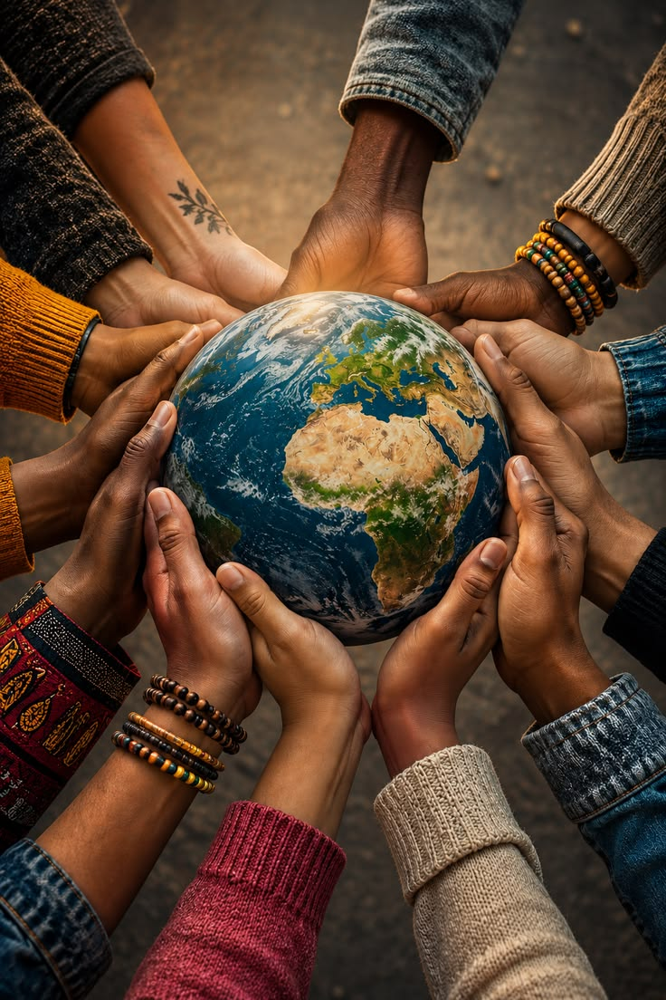

Sustainable Agriculture
Training communities in climate-smart farming, organic agriculture and modern methods to improve food security and income.
Eagle Ecovision is dedicated to promoting environmental conservation, sustainable development, and community empowerment across Kenya and East Africa.
Programs Get InvolvedTo foster sustainable development through environmental conservation, renewable energy, sustainable agriculture, and quality education while empowering vulnerable groups including women, orphans, youth, and children through comprehensive training, resource provision, and community-driven programs.
MORE ABOUT US
Real stories of transformation and hope from communities across East Africa
We work across multiple sectors to create lasting impact in communities throughout East Africa.
Training communities in climate-smart farming, organic agriculture and modern methods to improve food security and income.

Promoting solar, biogas and energy-efficient technologies in rural communities.

Clean water projects, school sanitation facilities and sanitary products for girls.

Tree planting, waste management and eco-awareness programs.

Learning materials, school supplies and resources for underprivileged children.

Skills training and resources for women, youth, orphans and children.
"Before Eagle Ecovision, I struggled to feed my family despite working on my small farm every day. Through their sustainable agriculture training, I learned about organic farming and water conservation. Today, I lead a cooperative of 30 women farmers, and our income has tripled."
Farmer Cooperative Leader, Nakuru County
STORIES OF TRANSFORMATIONHave a question, an idea or want to work with us? We would love to hear from you.
Contact UsSustainable AgricultureRenewable EnergyEducation Support
WHAT THE COMMUNITY SAYS"Eagle Ecovision doesn't just give handouts—they empower us with knowledge and skills that last a lifetime. Our community is thriving because of their holistic approach."
Your support helps us empower communities, protect the environment, and build a sustainable future for all.